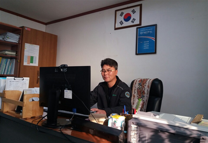
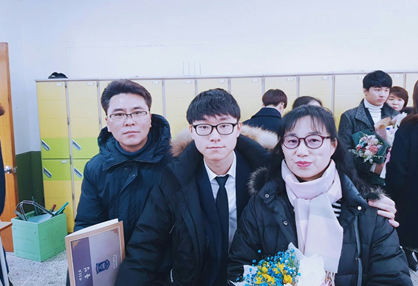

아버지
역할 : 아빠
성격 : 쾌활, 배려, 친근
개인적으로 존경하는 인물로서 좋은 아빠, 좋은 남편, 좋은 아들의 역할을 모두 충실히 하고 계신다.
어머니
역할 : 엄마
성격 : 배려, 너그러움, 포용적
항상 본인보다 자식을 더 생각하시며 좋은 엄마, 좋은 아내의 역할을 모두 충실히 하고 계신다.
형
역할 : 형
성격 : 외향적, 자립심, 뚜렷한 주관
하나밖에 없는 형제로서 은근히 동생을 챙기며 좋은 형의 역할을 충실히 하고 있다.
아버지 |
|
|  |
이름 : 정창신 역할 : 아빠 성격 : 쾌활, 배려, 친근 개인적으로 존경하는 인물로서 좋은 아빠, 좋은 남편, 좋은 아들의 역할을 모두 충실히 하고 계신다. |
어머니 |
|
|  |
이름 : 홍성숙 역할 : 엄마 성격 : 배려, 너그러움, 포용적 항상 본인보다 자식을 더 생각하시며 좋은 엄마, 좋은 아내의 역할을 모두 충실히 하고 계신다. |
형 |
|
|
이름 : 정유현 역할 : 형 성격 : 외향적, 자립심, 뚜렷한 주관 하나밖에 없는 형제로서 은근히 동생을 챙기며 좋은 형의 역할을 충실히 하고 있다. |